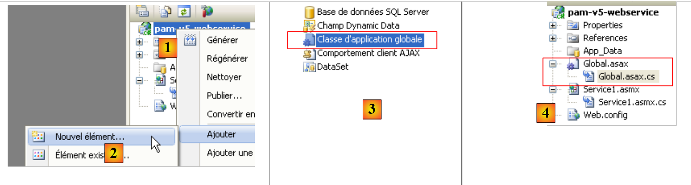
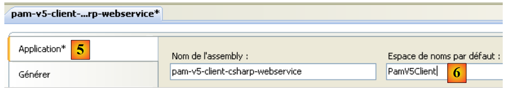
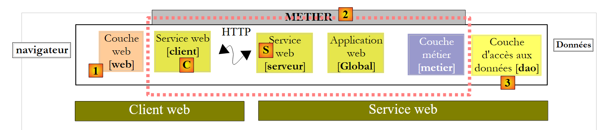
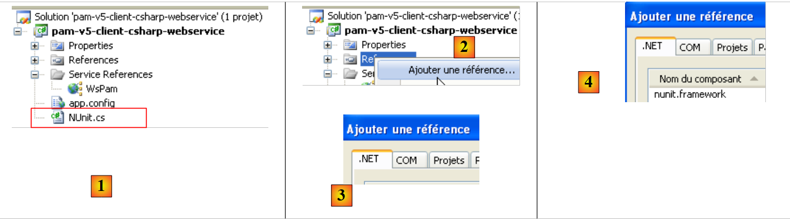
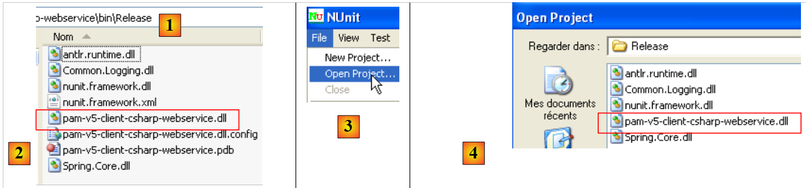

9. تطبيق [SimuPaie] – الإصدار 5 – ASP.NET / خدمة ويب
قراءات موصى بها: المرجع [2]، مقدمة إلى C# 2008، الفصل 10 "خدمات الويب"
9.1. البنية الجديدة للتطبيق
تتكون بنية تطبيق Pam ذات الطبقات حاليًا مما يلي:
 |
وسنعمل على تطويرها على النحو التالي:
 |
في حين أن طبقات [الويب] و[الأعمال] و[DAO] كانت تعمل في نفس الآلة الافتراضية .NET في البنية السابقة، فإن طبقة [الويب] ستعمل في الآلة الافتراضية الجديدة في آلة افتراضية مختلفة عن طبقات [الأعمال] و[DAO]. سيكون هذا هو الحال، على سبيل المثال، إذا كانت طبقة [الويب] موجودة على الجهاز M1 وطبقتي [الأعمال] و[DAO] موجودتين على الجهاز M2. لدينا هنا بنية عميل/خادم:
- يتكون الخادم من طبقتي [الأعمال] و[DAO]. ونظرًا لكونه خدمة ويب، فإنه يتطلب خادم الويب رقم 2 للتشغيل.
- يتكون العميل من طبقة [web]. للتشغيل، يتطلب خادم الويب رقم 1.
- يتواصل العميل والخادم عبر شبكة TCP/IP باستخدام بروتوكول HTTP/SOAP. للقيام بذلك، يجب إضافة طبقتين جديدتين إلى البنية:
- طبقة [S]، التي ستكون خدمة ويب. تتلقى خدمة الويب الطلبات من العملاء البعيدين وتستخدم طبقتي [الأعمال] و[DAO] لتلبيتها. هناك العديد من الطرق لإنشاء خدمة TCP/IP. تتمثل ميزة خدمة الويب في أمرين:
- تستخدم بروتوكول HTTP، المسموح به عبر جدران الحماية المؤسسية والحكومية
- تستخدم بروتوكول فرعي HTTP/SOAP قياسي، يتم تنفيذه بواسطة العديد من منصات التطوير: .NET وJava وPHP وFlex وغيرها. وبالتالي، يمكن "استهلاك" خدمة الويب (المصطلح القياسي) بواسطة عملاء .NET وJava وPHP وFlex وغيرها
- الطبقة [C]، التي ستعمل كعميل لخدمة الويب البعيدة. وسيكون دورها هو التواصل مع خدمة الويب [S].
- طبقة [S]، التي ستكون خدمة ويب. تتلقى خدمة الويب الطلبات من العملاء البعيدين وتستخدم طبقتي [الأعمال] و[DAO] لتلبيتها. هناك العديد من الطرق لإنشاء خدمة TCP/IP. تتمثل ميزة خدمة الويب في أمرين:
يمكن اشتقاق هذه البنية الجديدة من البنى السابقة دون بذل الكثير من الجهد:
- تظل الطبقتان [الأعمال] و[DAO] دون تغيير
- تتطور الطبقة [web] قليلاً، وذلك بشكل أساسي للإشارة إلى كيانات مثل Employee و Payroll، التي أصبحت كيانات تابعة لطبقة العميل [C]. هذه الكيانات مشابهة لتلك الموجودة في طبقات [business] أو [DAO] ولكنها تنتمي إلى مساحات أسماء مختلفة.
- طبقة الخادم [S] هي فئة تنفذ واجهة IPamMetier لطبقة [business]. هذا التنفيذ يستدعي ببساطة الطرق المقابلة لطبقة [business]. الطرق التي تنفذها طبقة الخادم [S] ستكون "معروضة" للعملاء البعيدين، الذين سيتمكنون من استدعائها.
- سيتم إنشاء طبقة العميل [C] بواسطة Visual Studio.
فيما يلي مبادئ البنية الجديدة:
- تستمر طبقة [web] في التواصل مع طبقة [business] كما لو كانت محلية. لتحقيق ذلك، تنفذ طبقة العميل [C] واجهة IPamMetier لطبقة [business] الفعلية وتقدم نفسها لطبقة [web] كطبقة [business] محلية. وبصرف النظر عن مشكلة مساحة الاسم المذكورة سابقًا، تظل طبقة [web] دون تغيير. هذه هي ميزة العمل في طبقات. لو كنا قد أنشأنا تطبيقًا من طبقة واحدة، لكان ذلك يتطلب إجراء تعديل جذري.
- تقوم طبقة العميل [C] بإعادة توجيه طلبات طبقة [الويب] بشكل شفاف إلى خدمة الويب البعيدة [S]. وهي تتولى جميع جوانب "الاتصال الشبكي". تتلقى استجابة من خدمة الويب البعيدة، وتقوم بتنسيقها لإعادتها إلى طبقة [الويب] بالشكل الذي تتوقعه هذه الأخيرة.
- على جانب الخادم، تتلقى خدمة الويب [S] الأوامر من عملائها البعيدين. وتقوم بتنسيقها لاستدعاء أساليب واجهة IPamMetier في طبقة [الأعمال]. وبمجرد تلقيها الرد من طبقة [الأعمال]، تقوم بتنسيقه لإرساله عبر الشبكة إلى العميل [C]. ولا تحتاج طبقتا [الأعمال] و[DAO] إلى تعديل.
9.2. مشروع Visual Web Developer لخدمة الويب
نقوم بإنشاء مشروع جديد باستخدام Visual Web Developer:
 |
- في [1]، نختار مشروع ويب بلغة C#
- في [2]، نختار "تطبيق خدمة ويب ASP.NET"
- في [3]، نسمي مشروع الويب
- في [4]، نحدد موقعًا لهذا المشروع
 |
- في [1]، المشروع الذي تم إنشاؤه. وهو مشروع ويب قياسي يحتوي على التفاصيل التالية:
- حددنا أن المشروع هو "خدمة ويب". لا ترسل خدمة الويب صفحات ويب بتنسيق HTML إلى عملائها، بل ترسل بيانات بتنسيق XML. لذلك، لم يتم إنشاء الصفحة [Default.aspx] التي يتم إنشاؤها عادةً.
- في [2]، تم إنشاء ملف [Service1.asmx] بالمحتوى التالي:
<%@ WebService Language="C#" CodeBehind="Service1.asmx.cs" Class="pam_v5_webservice.Service1" %>
- (تابع)
- - تشير علامة WebService إلى أن [Service.asmx] هي خدمة ويب
- - تحدد السمة CodeBehind موقع شفرة المصدر لهذه الخدمة الويب
- - تحدد السمة Class اسم الفئة التي تنفذ خدمة الويب في شفرة المصدر
فيما يلي شفرة المصدر [Service.asmx.cs] لخدمة الويب الافتراضية:
using System.Web.Services;
namespace pam_v5_webservice
{
/// <summary>
/// Service summary description1
/// </summary>
[WebService(Namespace = "http://tempuri.org/")]
[WebServiceBinding(ConformsTo = WsiProfiles.BasicProfile1_1)]
[System.ComponentModel.ToolboxItem(false)]
// To allow this Web service to be called from a script using ASP.NET AJAX, remove the comment marks from the following line.
// [System.Web.Script.Services.ScriptService]
public class Service1 : System.Web.Services.WebService
{
[WebMethod]
public string HelloWorld()
{
return "Hello World";
}
}
}
- السطر 8: تعليق WebService، الذي يؤدي إلى عرض فئة Service1 في السطر 13 كخدمة ويب. تنتمي خدمة الويب إلى مساحة اسم لمنع وجود خدمتين ويب في العالم تحملان نفس الاسم. سنحتاج إلى تغيير مساحة الاسم هذه لاحقًا.
- السطر 13: تستمد فئة Service1 من فئة WebService في إطار عمل .NET.
- السطر 16: يضمن تعليق WebMethod أن الطريقة المُعلَّمة بهذه الطريقة ستُتاح للعملاء البعيدين، الذين سيتمكنون بعد ذلك من استدعائها.
- الأسطر 17-20: طريقة HelloWorld هي طريقة توضيحية. سنقوم بإزالتها لاحقًا. وهي تتيح لنا إجراء الاختبارات الأولية واستكشاف أدوات Visual Studio بالإضافة إلى بعض المفاهيم الأساسية المتعلقة بخدمات الويب.
 |
- في [1]، نقوم بتشغيل خدمة الويب [Service.asmx]
 |
- قام VS Web Developer بتشغيل خادم الويب المدمج الخاص به وهو يستمع على منفذ عشوائي، وهو في هذه الحالة 1599. ثم تم طلب عنوان URL [2] من خادم الويب. هذا هو عنوان URL لصفحة اختبار خدمة الويب.
- في [3]، يوجد رابط يتيح لك عرض ملف وصف خدمة الويب. هذا الملف، الذي يُسمى ملف WSDL (لغة وصف خدمة الويب) بسبب امتداده (.wsdl)، هو ملف XML يصف الطرق التي تعرضها خدمة الويب. ومن خلال ملف WSDL هذا، يمكن للعملاء معرفة:
- مساحة اسم خدمة الويب
- قائمة الطرق التي تعرضها خدمة الويب
- المعلمات المتوقعة من كل منها
- الاستجابة التي ترجعها كل منها
- في [4]، الطريقة الوحيدة التي توفرها خدمة الويب .
 |
- في [5]، محتويات ملف WSDL الذي تم الحصول عليه عبر الرابط [3]. لاحظ عنوان URL [6]. معرفة عنوان URL هذا ضرورية لعملاء خدمة الويب.
 |
- في [7]، تتيح لك الصفحة التي يتم الوصول إليها عبر الرابط [4] استدعاء طريقة [HelloWorld] لخدمة الويب
- في [8]، النتيجة التي تم الحصول عليها: استجابة XML. لاحظ عنوان URL الخاص بالطريقة [9].
يساعدنا فحص الصفحات السابقة على فهم كيفية استدعاء طريقة خدمة الويب ونوع الاستجابة التي تعيدها. وهذا يمكّننا من كتابة عملاء HTTP قادرين على التواصل مع خدمة الويب. تسمح معظم بيئات التطوير المتكاملة الحديثة (IDE) بإنشاء عميل HTTP هذا تلقائيًا، مما يوفر على المطور عناء كتابته. وهذا ينطبق بشكل خاص على Visual Studio Express.
قبل متابعة هذا المشروع، سنقوم بتغيير مساحة الاسم الافتراضية المستخدمة عند إنشاء الفئات:
 |
عندما نختار خصائص المشروع (انقر بزر الماوس الأيمن على المشروع / خصائص)، نرى [1] اسم تجميع المشروع و[2] مساحة الاسم الافتراضية الخاصة به.
بمجرد الانتهاء من ذلك،
- في [Service1.asmx.cs]، نقوم بتغيير مساحة اسم الفئة:
using System.Web.Services;
namespace pam_v5
{
...
public class Service1 : System.Web.Services.WebService
{
...
}
}
- في [Service.asmx]، نقوم أيضًا بتغيير مساحة الاسم المستخدمة لفئة [Service1] (انقر بزر الماوس الأيمن / عرض المصدر):
<%@ WebService Language="C#" CodeBehind="Service1.asmx.cs" Class="pam_v5.Service1" %>
لنعد إلى بنية تطبيقنا:
 |
- الطبقة [S] هي خدمة الويب. وهي تعرض ببساطة أساليب الطبقة [business] للعملاء البعيدين. هذه هي الطبقة التي نقوم ببنائها حاليًا.
- الطبقة [C] هي عميل HTTP لخدمة الويب. هذه هي الطبقة التي يمكن لبيئات تطوير التطبيقات (IDE) إنشاؤها تلقائيًا.
- تتعامل طبقة [web] مع طبقة [C] كطبقة [business] محلية إذا تأكدنا من أن طبقة [C] تنفذ واجهة طبقة [business] البعيدة.
يمكننا أن نرى أدناه أن خدمة الويب الخاصة بنا ستقوم بما يلي:
- تعرض أساليب طبقة [الأعمال]
- التواصل مع طبقة [الأعمال]، والتي ستتواصل بدورها مع طبقة [DAO].
لذلك يجب أن يستخدم المشروع مكتبات DLL لطبقتي [business] و[DAO]. ويتطور الأمر على النحو التالي:
 |
- في [1]، نضيف مراجع إلى المشروع
- في [2]، نختار مكتبات DLL المعتادة من مجلد [lib]. وسنتأكد من ضبط خاصية "Copy to Local" الخاصة بها على True. مكتبات DLL المختارة هي تلك التي تنفذ طبقات [business] و[DAO] بدعم NHibernate.
يمكن أن يحتوي تطبيق الويب من نوع "ASP.NET Web Service" على فئة تطبيق عامة "Global.asax" تمامًا مثل تطبيق "ASP.NET Web Site" الكلاسيكي. وقد رأينا مزايا هذه الفئة:
- يتم إنشاء مثيل لها عند بدء تشغيل التطبيق وتبقى في الذاكرة
- وبالتالي يمكنها تخزين البيانات المشتركة بين جميع العملاء والتي تكون للقراءة فقط. في تطبيقنا، ستخزن، كما في التطبيقات السابقة، القائمة المبسطة للموظفين. وهذا سيتجنب الحاجة إلى استرداد هذه القائمة من قاعدة البيانات عندما يطلبها أحد العملاء.
 |
- في [1]، انقر بزر الماوس الأيمن على المشروع
- في [2]، حدد خيار [Add New Item]
- في [3]، حدد [فئة التطبيق العامة]
- في [4]، تمت إضافة ملف [Global.asax] إلى المشروع
محتويات ملف [Global.asax] هي كما يلي:
<%@ Application Codebehind="Global.asax.cs" Inherits="pam_v5.Global" Language="C#" %>
محتويات ملف [Global.asax.cs] هي كما يلي:
using System;
namespace pam_v5
{
public class Global : System.Web.HttpApplication
{
protected void Application_Start(object sender, EventArgs e)
{
}
...
}
}
ماذا يجب أن نفعل في طريقة Application_Start؟ بالضبط نفس الشيء كما في تطبيقات الويب السابقة. دعونا نعود إلى بنية التطبيق ونضع فئة [Global] هناك:
 |
في الرسم البياني أعلاه،
- يتم إنشاء مثيل لفئة [Global] عند بدء تشغيل خدمة الويب. وتبقى في الذاكرة طالما أن خدمة الويب نشطة.
- تقوم فئة [Global] بإنشاء مثيلات لطبقتي [business] و[DAO] في أسلوبها [Application_Start]
- لتحسين الأداء، تخزن فئة [Global] القائمة المبسطة للموظفين في حقل داخلي. وستسترد قائمة الموظفين من هذا الحقل.
- يتم إنشاء مثيل لخدمة الويب مع كل طلب من العميل. وتختفي بعد تلبية ذلك الطلب. ولن تتواصل مباشرة مع طبقة [business] بل مع الفئة [Global]. وستقوم هذه الأخيرة بتنفيذ واجهة طبقة [business].
تشبه فئة [Global] تلك التي تم إنشاؤها بالفعل للتطبيقات السابقة:
using System;
using Pam.Dao.Entites;
using Pam.Metier.Entites;
using Pam.Metier.Service;
using Spring.Context.Support;
namespace pam_v5
{
public class Global : System.Web.HttpApplication
{
// --- static application data ---
public static Employe[] Employes;
public static IPamMetier PamMetier = null;
protected void Application_Start(object sender, EventArgs e)
{
// instantiation layer [metier]
PamMetier = ContextRegistry.GetContext().GetObject("pammetier") as IPamMetier;
// retrieve the simplified employee table
Employes = PamMetier.GetAllIdentitesEmployes();
}
// simplified list of employees
static public Employe[] GetAllIdentitesEmployes()
{
return Employes;
}
// employee salary
static public FeuilleSalaire GetSalaire(string SS, double heuresTravaillées, int joursTravailles)
{
return PamMetier.GetSalaire(SS, heuresTravaillées, joursTravailles);
}
}
}
تنفذ فئة [Global] واجهة [IPamMetier]، ولكن هذا لم يُذكر صراحةً في الإعلان:
public class Global : System.Web.HttpApplication, IPamMetier
في الواقع، تعد الطريقتان GetAllEmployeeIDs (السطر 24) و GetSalary (السطر 30) ثابتتين، في حين أن طرق واجهة IPamMetier ليست كذلك. لذلك، لا يمكن للفئة Global تنفيذ واجهة IPamMetier. علاوة على ذلك، لا يمكن إعلان الطريقتين GetAllEmployeeIDs و GetSalary على أنهما غير ثابتتين. وذلك لأن الوصول إليهما يتم عبر اسم الفئة وليس عبر مثيل للفئة.
- السطر 15: تشبه طريقة Application_Start تلك الخاصة بفئات [Global] التي تمت دراستها في الإصدارات السابقة. فهي تقوم بإنشاء مثيل لطبقة [business] (السطر 18) ثم تهيئة (السطر 20) مصفوفة الموظفين من السطر 12.
- السطر 24: تعرض طريقة GetAllEmployeeIDs ببساطة مصفوفة الموظفين من السطر 12. وهذه هي فائدة تخزينها في بداية التطبيق.
- السطر 30: تستدعي طريقة GetSalaire الطريقة التي تحمل الاسم نفسه في طبقة [business].
لإنشاء مثيل لطبقة [business] (السطر 18)، تستخدم فئة [Global] إطار عمل Spring. يتم تكوين هذا بواسطة ملف [Web.config]، وهو مطابق لملف المشروع السابق: فهو يكوّن Spring و NHibernate لإنشاء مثيلات لطبقتي [business] و [DAO] لخدمة الويب.
لنعد إلى بنية تطبيق العميل/الخادم الخاص بنا:
 |
على جانب الخادم، كل ما تبقى هو كتابة خدمة الويب [S] نفسها. إذا عدنا إلى بنية التطبيق:
 |
نرى أنه على جانب الخادم، جميع الطبقات التي تسبق طبقة [الأعمال] تنفذ واجهتها، IPamMetier. هذا ليس إلزامياً، ولكنه نهج منطقي. يمكن تطبيق هذا المنطق على جانب العميل، على العميل [C] لخدمة الويب [S]. وبالتالي، فإن جميع الطبقات التي تفصل طبقة [الويب] عن طبقة [الأعمال] تنفذ واجهة IPamMetier. وبالتالي، يمكننا القول إننا عدنا إلى تطبيق ثلاثي الطبقات:
- طبقة العرض [الويب] [1]
- طبقة [الأعمال] [2]
- طبقة الوصول إلى البيانات [3]
يمكن أن يكون تنفيذ خدمة الويب [Service1.asmx.cs] على النحو التالي:
using System.Web.Services;
using Pam.Dao.Entites;
using Pam.Metier.Entites;
using Pam.Metier.Service;
namespace pam_v5
{
[WebService(Namespace = "http://st.istia.univ-angers.fr/")]
[WebServiceBinding(ConformsTo = WsiProfiles.BasicProfile1_1)]
[System.ComponentModel.ToolboxItem(false)]
public class Service1 : System.Web.Services.WebService, IPamMetier
{
// list of all employee identities
[WebMethod]
public Employe[] GetAllIdentitesEmployes()
{
return Global.GetAllIdentitesEmployes();
}
// ------- salary calculation
[WebMethod]
public FeuilleSalaire GetSalaire(string ss, double heuresTravaillees, int joursTravailles)
{
return Global.GetSalaire(ss, heuresTravaillees, joursTravailles);
}
}
}
- السطر 8: تم توضيح الفئة بالسمة [WebService]، وقمنا بتعيين اسم لمساحة أسماء خدمة الويب
- السطر 11: ترث الفئة [Service1] من الفئة [WebService] وتنفذ واجهة [IPamMetier]
- السطران 15 و 22: يتم توضيح كل طريقة من طرق الفئة بالسمة [WebMethod] من أجل عرضها على العملاء البعيدين. بشكل افتراضي، يتم عرض جميع الطرق العامة لخدمة الويب. وبالتالي، فإن السمات في السطرين 15 و 22 اختيارية هنا. لتنفيذ واجهة [IPamMetier]، تقوم كل طريقة ببساطة باستدعاء الطريقة التي تحمل الاسم نفسه في الفئة [Global].
نحن جاهزون لتشغيل خدمة الويب:
 |
- في [1]، يتم إعادة إنشاء المشروع
- في [2]، نختار خدمة الويب [Service1.asmx] ونعرضها في المتصفح [3]
- في [4]، الصفحة الويب المعروضة. وهي تعرض طرق خدمة الويب.
 |
- في [4]، نتبع الرابط [GetAllIdentitesEmployes] وفي [5] نحصل على صفحة الاختبار لهذه الطريقة.
- في [6]، عنوان URL للطريقة
- في [7]، زر [Call] المستخدم لاختبار الطريقة. لا تتطلب هذه الطريقة أي معلمات.
- في [8]، نتيجة XML التي أعادتها خدمة الويب. في هذه النتيجة، تعتبر خصائص SS و LastName و FirstName فقط من كائنات Employee ذات أهمية لأن طريقة [GetAllEmployeeIDs] تطلب هذه الخصائص فقط. ومع ذلك، تعيد هذه الطريقة مصفوفة من كائنات Employee. يمكننا أن نرى في [8] أن الخصائص الرقمية Id و Version مضمنة في دفق XML الذي تم إرجاعه، ولكن ليس الخصائص ذات القيمة الفارغة: Address و City و ZipCode و Allowances.
لدينا خدمة ويب نشطة. سنقوم الآن بكتابة عميل C# لها. للقيام بذلك، سنحتاج إلى URI لملف WSDL الخاص بخدمة الويب. نحصل عليه من الصفحة التي يتم عرضها مبدئيًا عند تنفيذ [Service.asmx]:
 |
- في [1]، عنوان URI لخدمة الويب
- في [2]، الرابط إلى ملف WSDL الخاص بها
- في [3]، قيمة هذا الرابط
9.3. مشروع C# لعميل NUnit لخدمة الويب
نقوم بإنشاء مشروع C# (باستخدام Visual C#، وليس Visual Web Developer) لعميل خدمة الويب. سيكون هذا عميل اختبار NUnit. لذلك، سيكون المشروع من نوع "مكتبة الفئات".
 |
- في [1]، نقوم بإنشاء مشروع C# من نوع "مكتبة الفئات"
- في [2]، نسمي المشروع
- في [3]، المشروع. نحذف [Class1.cs].
- في [4]، المشروع الجديد.
 |
- في خصائص المشروع، في علامة التبويب [Application] [5]، نقوم بتعيين مساحة اسم المشروع. ستكون كل فئة يتم إنشاؤها بواسطة IDE ضمن مساحة الاسم هذه.
نحفظ مشروعنا الجديد في المكان الذي نختاره:
وبمجرد الانتهاء من ذلك، نقوم بإنشاء عميل خدمة الويب البعيدة. لفهم ما نحن على وشك القيام به، علينا إعادة النظر في بنية العميل/الخادم التي يجري إنشاؤها حاليًا:
 |
سيقوم IDE بإنشاء طبقة العميل [C] من عنوان URI لملف WSDL الخاص بخدمة الويب [S]. تذكر أن عنوان URI لهذا الملف قد تم تدوينه سابقًا. ننتقل من الويب كما يلي:
 |
- في [1]، انقر بزر الماوس الأيمن على فرع References وأضف مرجع خدمة
- في [2]، أدخل عنوان URL لملف WSDL الخاص بخدمة الويب الذي تم تدوينه سابقًا. يجب أن تكون الخدمة قيد التشغيل إذا لم تكن كذلك بالفعل.
- في [3]، اطلب اكتشاف خدمة الويب عبر ملف WSDL الخاص بها
- في [4]، خدمة الويب التي تم اكتشافها
- في [5]، الطرق التي تعرضها خدمة الويب.
- في [6]، مساحة الاسم التي تريد وضع فئات وواجهات العميل التي سيتم إنشاؤها فيها.
- قم بتأكيد المعالج
 |
- في [1]، ملف العميل الذي تم إنشاؤه ( ). انقر عليه مرتين لعرض محتوياته.
- في [2]، في مستكشف الكائنات، يتم عرض الفئات والواجهات الخاصة بمساحة الاسم Client.WsPam. هذه هي مساحة الاسم للعميل الذي تم إنشاؤه.
- في [3]، الفئة التي تنفذ عميل خدمة الويب.
- في [4]، الطرق التي ينفذها العميل [Service1SoapClient]. ستجد هنا طريقتين لخدمة الويب البعيدة [5] و[6].
- في [2]، يمكنك رؤية مخططات الكيانات للطبقات:
- [business]: Payroll، PayrollItems
- [DAO]: الموظف، الاشتراكات، البدلات
للمضي قدمًا، ضع في اعتبارك أن هذه التمثيلات للكيانات البعيدة موجودة على جانب العميل وفي مساحة اسم PamV5Client.WsPam.
دعونا نفحص الطرق والخصائص التي يعرضها أحدها:
 |
- في [1]، نختار الفئة المحلية [Employee]
- في [2]، نرى خصائص الكيان [Employee] البعيد بالإضافة إلى الحقول الخاصة المستخدمة لتلبية الاحتياجات المحددة للكيان المحلي.
لنعد إلى تطبيق C# الخاص بنا. نضيف إليه فئة اختبار NUnit:
 |
- في [1]، الفئة [NUnit] المضافة. ستتطلب فئة [NUnit] إطار عمل NUnit وبالتالي مرجعًا إلى ملف DLL الخاص به. نفترض هنا أن إطار عمل NUnit قد تم تثبيته على الجهاز (http://nunit.org/).
- في [2]، نضيف مرجعًا إلى المشروع
- في علامة التبويب [3] .NET، التي تسرد ملفات DLL المسجلة على الجهاز، نختار [4]، ملف DLL [nunit.framework]، الإصدار 2.4.6 أو أحدث.
بالإضافة إلى ذلك، سنستخدم Spring لإنشاء مثيل للعميل المحلي [C] لخدمة الويب [S]:
 |
يمكن إضافة الإشارة إلى ملف DLL الخاص بـ Spring بنفس الطريقة المتبعة مع إطار عمل NUnit إذا كانت ملفات DLL مسجلة بالفعل على الجهاز (http://www.springframework.net/download.html).
نحن نتبع طريقة مختلفة. نستخدم المجلد [lib] من المشاريع السابقة، الذي يحتوي على ملفات DLL المطلوبة من قبل Spring، ونضيف مرجع Spring إلى المشروع:
 |
دعونا نعيد النظر في بنية العميل قيد التطوير حاليًا:
 |
في الأعلى، نرى أن عميل الاختبار [1] يتفاعل مع طبقة [الأعمال] الموسعة [2]. تحتوي هذه الطبقة على نفس الأساليب الموجودة في طبقة [الأعمال] البعيدة. وبالتالي، يمكننا استخدام فئة الاختبار التي سبق أن تعاملنا معها عند اختبار طبقة [الأعمال] في مشروع C# [pam-metier-dao-nhibernate]:
using NUnit.Framework;
using Pam.Dao.Entites;
using Pam.Metier.Entites;
using Pam.Metier.Service;
using Spring.Context.Support;
namespace Pam.Metier.Tests {
[TestFixture()]
public class NunitTestPamMetier : AssertionHelper {
// the [metier] layer to test
private IPamMetier pamMetier;
// manufacturer
public NunitTestPamMetier() {
// layer instantiation [dao]
pamMetier = ContextRegistry.GetContext().GetObject("pammetier") as IPamMetier;
}
[Test]
public void GetAllIdentitesEmployes() {
// audit no. of employees
Expect(2, EqualTo(pamMetier.GetAllIdentitesEmployes().Length));
}
[Test]
public void GetSalaire1() {
// wage sheet calculation
FeuilleSalaire feuilleSalaire = pamMetier.GetSalaire("254104940426058", 150, 20);
// checks
Expect(368.77, EqualTo(feuilleSalaire.ElementsSalaire.SalaireNet).Within(1E-06));
// non-existent employee payslip
bool erreur = false;
try {
feuilleSalaire = pamMetier.GetSalaire("xx", 150, 20);
} catch (PamException) {
erreur = true;
}
Expect(erreur, True);
}
}
}
هناك بعض التغييرات التي يجب إجراؤها:
- في السطر 18، نقوم بإنشاء مثيل لطبقة [business] باستخدام إطار عمل Spring. الفئة ليست هي نفسها في كلتا الحالتين. هنا، طبقة [business] المحلية هي مثيل لفئة [PamV5Client.WsPam.Service1SoapClient]، وهي الفئة التي تم إنشاؤها بواسطة IDE. لذلك، يتم تكوين Spring على النحو التالي في ملف [app.config] لمشروع C#:
<?xml version="1.0" encoding="utf-8" ?>
<configuration>
<configSections>
<sectionGroup name="spring">
<section name="context" type="Spring.Context.Support.ContextHandler, Spring.Core" />
<section name="objects" type="Spring.Context.Support.DefaultSectionHandler, Spring.Core" />
</sectionGroup>
</configSections>
<spring>
<context>
<resource uri="config://spring/objects" />
</context>
<objects xmlns="http://www.springframework.net">
<object id="pammetier" type="PamV5Client.WsPam.Service1SoapClient, pam-v5-client-csharp-webservice"/>
</objects>
</spring>
<system.serviceModel>
...
- السطر 16 أعلاه، الكائن [pammetier] هو مثيل لفئة [PamV5Client.WsPam.Service1SoapClient] الموجودة في التجميع [pam-v5-client-csharp-webservice]. للعثور على المعلومة الأولى، ما عليك سوى الرجوع إلى تعريف فئة [Service1SoapClient] في مستكشف الكائنات (القسم 9.3):
 |
- في [2]، فئة التنفيذ للطبقة [business] المحلية، وفي [1] مساحة اسمها
- في [3]، في خصائص المشروع، اسم التجميع، وهي المعلومة الثانية اللازمة لتكوين كائن Spring [pammetier].
لنعد إلى الكود الخاص بإنشاء مثيل لطبقة [الأعمال] المحلية في [NUnit.cs]:
// the [metier] layer to test
private IPamMetier pamMetier;
// manufacturer
public NunitTestPamMetier() {
// layer instantiation [dao]
pamMetier = ContextRegistry.GetContext().GetObject("pammetier") as IPamMetier;
}
السطر 7: كانت الطبقة [الأعمال] البعيدة من النوع IPamMetier. هنا، الطبقة [الأعمال] من النوع [Service1SoapClient]:
public class Service1SoapClient : System.ServiceModel.ClientBase<Service1Soap>
نلاحظ أن فئة Service1SoapClient لا تنفذ واجهة IPamMetier على الرغم من أنها تعرض طرقًا تحمل الأسماء نفسها. لذلك، يجب أن نكتب إنشاء مثيل الطبقة [الأعمال] المحلية على النحو التالي:
// the [metier] layer to test
private Service1SoapClient pamMetier;
// manufacturer
public NunitTestPamMetier() {
// instantiation layer [metier]
pamMetier = ContextRegistry.GetContext().GetObject("pammetier") as Service1SoapClient;
}
تغيير آخر يجب إجراؤه:
[Test]
public void GetSalaire1() {
...
try {
feuilleSalaire = pamMetier.GetSalaire("xx", 150, 20);
} catch (PamException) {
erreur = true;
}
Expect(erreur, True);
}
يستخدم الكود أعلاه، في السطر 6، نوع PamException، الذي لا يوجد على جانب العميل. سنستبدله بفئته الأصلية، وهي نوع Exception.
[Test]
public void GetSalaire1() {
...
try {
feuilleSalaire = pamMetier.GetSalaire("xx", 150, 20);
} catch (Exception) {
erreur = true;
}
Expect(erreur, True);
}
أخيرًا، لم تعد مساحات الأسماء المستوردة هي نفسها:
using System;
using PamV5Client.WsPam;
using NUnit.Framework;
using Spring.Context.Support;
بمجرد الانتهاء من ذلك، يمكن تجميع مشروع "مكتبة الفئات". ويتم إنشاء ملف DLL التالي:
 |
- في [1]، المجلد [bin/Release] لمشروع C#
- في [2]، ملف DLL الخاص بالمشروع.
ثم يتم تشغيل اختبار NUnit بواسطة إطار عمل NUnit (يجب أن تكون قاعدة بيانات MySQL dbpam_nhibernate نشطة لإجراء الاختبار):
- في [3] و [4]، يتم تحميل DLL [2] في تطبيق اختبار NUnit
 |
- في [5]، يتم تحديد فئة الاختبار وتنفيذها [6]
- في [7]، تظهر نتائج الاختبار الناجح
لدينا الآن خدمة ويب عاملة.